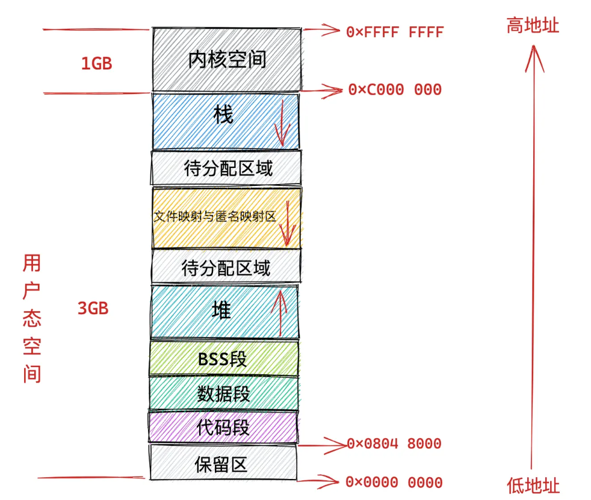
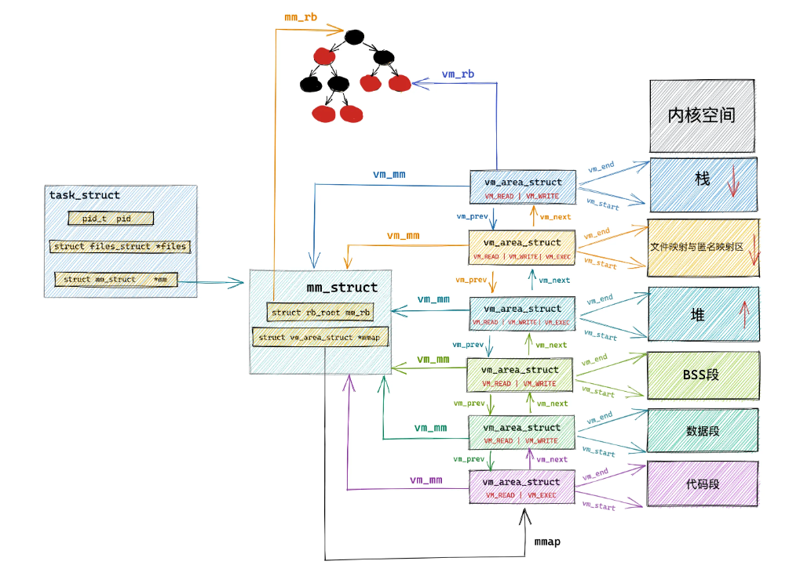

CH4-内核虚拟空间学习与I.MX6ULL嵌入式驱动开发实践
虚拟内存内核空间

==内核态虚拟内存空间是所有进程共享的，不同进程进入内核态之后看到的虚拟内存空间全部是一样的。==
线性映射区 lowmem
在总共大小1G的内核虚拟内存空间中，位于最前边有一块896M大小的区域，我们称之为直接映射区或者线性映射区，地址范围为3G—–3G+896m。
之所以这块896M大小的区域称为直接映射区或者线性映射区，是因为这块连续的虚拟内存地址会映射到0-896M这块连续的物理内存上。
也就是说3G-3G+896m这块896M大小的虚拟内存会直接映射到0-896M这块896M大小的物理内存上，这块区域中的虚拟内存地址直接减去0xC0000000(3G)就得到了物理内存地址。所以我们称这块区域为直接映射区。直接映射区中的映射关系是一比一映射。映射关系是固定的不会改变。
原理
线性映射区（Direct Mapping Area）是内核虚拟地址空间中一段固定偏移映射的区域，其核心原理是通过简单的数学关系建立虚拟地址与物理地址的直接对应：
经典通常是：
1
虚拟地址 = 物理地址 + PAGE_OFFSET
PAGE_OFFSET：内核空间起始地址（32位ARM通常为0xC0000000）；在 32 位系统 中，内核虚拟地址空间通常为
0xC0000000（3GB）到0xFFFFFFFF（4GB），起始地址为0xC0000000映射关系在系统启动时建立，始终保持不变
映射范围覆盖整个低端内存区域（ZONE_NORMAL）
在imx6ull开发板的内核配置中（NXP官方的内核代码）为：
1
2
3
4
5
6
7
8
9
10
11
12
13
14//linux-core/arch/arm/include/asm/memory.h
static inline phys_addr_t __virt_to_phys(unsigned long x)
{
return (phys_addr_t)x - PAGE_OFFSET + PHYS_OFFSET;
}
static inline unsigned long __phys_to_virt(phys_addr_t x)
{
return x - PHYS_OFFSET + PAGE_OFFSET;
}PAGE_OFFSET 虚拟内存中内核空间中线性映射区的起始地址（为0x80000000），因为在系统配置中设置为了2GB/2GB的类型，可以在kernel代码文件使用
make menuconfig命令进入图形界面设置，查看PAGE_OFFSET的设置PHYS_OFFSET 物理内存中NOEMAL_ZONE的起始地址
存储的内容
在这段896M大小的物理内存中，前1M已经在系统启动的时候被系统占用，1M之后的物理内存存放的是内核代码段，数据段，BSS段（这些信息起初存放在ELF格式的二进制文件中，在系统启动的时候被加载进内存)。
当我们使用fork系统调用创建进程的时候，内核会创建一系列进程相关的描述符，比如之前提到的进程的核心数据结构task_struct,进程的内存空间描述符mm_struct,以及虚拟内存区域描述符vm_area_struct等。这些进程相关的数据结构也会存放在物理内存前896M的这段区域中，当然也会被直接映射至内核态虚拟内存空间中的3G-3G+896m这段直接映射区域中。
当进程被创建完毕之后，在内核运行的过程中，会涉及内核栈的分配，内核会为每个进程分配一个固定大小的内核栈（一般是两个页大小，依赖具体的体系结构），每个进程的整个调用链必须放在自己的内核栈中，内核栈也是分配在直接映射区。
功能划分
理想状况下任何种类的数据页都可以存放在任何页框中，没有什么限制。
但是实际的计算机体系结构受到硬件方面的限制制约，间接导致限制了页框的使用方式。比如在X86体系结构下，ISA总线的DMA(直接内存存取)控制器，只能对内存的前16M进行寻址，这就导致了ISA设备不能在整个32位地址空间中执行DMA，只能使用物理内存的前16M进行DMA操作。
因此直接映射区的前16M专门让内核用来为DMA分配内存我们称之为ZONE_DMA。==用于DMA的内存必须从ZONE_DMA区域中分配==。而直接映射区中剩下的部分也就是从16M到896M(不包含896M)这段区域，我们称之为ZONE_NORMAL
ZONE_NORMAL由于也是属于直接映射区的一部分，对应的物理内存16M到896M这段区域也是被直接映射至内核态虚拟内存空间中的3G+16M到3G+896M这段虚拟内存上。
注意：ZONE_DMA和ZONE_NORMAL是内核针对物理内存区域的划分。
kmalloc函数
- 从**低端内存（ZONE_DMA/ZONE_NORMAL）**分配==物理连续的内存块==，适用于小块内存需求（通常 ≤ 128KB）。
申请与释放内存：
1 |
|
- size:分配的内存大小，单位为字节
- flags：
| 标志位 | 含义 | 使用场景 |
|---|---|---|
GFP_USER |
用户空间分配 | 映射到用户空间的内存 |
GFP_KERNEL |
内核常规分配 | 进程上下文（可睡眠） |
GFP_ATOMIC |
原子分配 | 中断/原子上下文（不可睡眠） |
GFP_NOWAIT |
非阻塞分配 | 避免直接回收内存 |
GFP_DMA |
DMA内存分配 | 硬件DMA操作（<16MB） |
__GFP_ZERO |
清零内存 | kzalloc内部使用 |
__GFP_HIGHMEM |
高端内存分配 | 访问>896MB物理内存 |
- 返回值：虚拟地址
实现机制分析
关键实现机制：
大小分类：
- 小于8KB：通过SLAB/SLUB分配器
- 大于8KB：直接调用伙伴系统
缓存机制
1
2
3
4// 内核预定义缓存（mm/slab_common.c）
struct kmem_cache *kmalloc_caches[KMALLOC_SHIFT_HIGH + 1];
// 典型缓存大小：32, 64, 128, 256, 512, 1024, 2048...字节分配函数核心逻辑
1
2
3
4
5
6
7void *kmalloc(size_t size, gfp_t flags) {
if (__builtin_constant_p(size)) {
// 编译器优化已知大小
return __kmalloc(size, flags);
}
return __kmalloc(size, flags);
}
kmalloc与Slab、伙伴系统：
1 | 应用程序 |
协作机制：
小内存分配路径：
1
2
3kmalloc(128, GFP_KERNEL)
→ slab_alloc(kmalloc-128 cache)
→ 从per-CPU缓存获取对象大内存分配路径：
1
2
3
4kmalloc(16384, GFP_KERNEL) // 16KB
→ (size > 8192)
→ alloc_pages(GFP_KERNEL, 4) // 2^4=16页
→ 伙伴系统分配连续页缓存填充机制：
- 当SLAB缓存为空时，调用
__get_free_pages()向伙伴系统申请整页 - 将整页分割为多个小对象加入缓存
- 当SLAB缓存为空时，调用
kmalloc 能申请的最大内存是多少？
在 x86 系统中，kmalloc 的最大申请大小由两个关键因素决定：
技术限制：
SLUB/SLAB 上限：默认最大为 8KB（
KMALLOC_MAX_SIZE）伙伴系统上限：最大连续分配为
2^(MAX_ORDER-1)页32位 x86：
MAX_ORDER=11→ 2^10=1024 页 → 4MB (PAGE_SIZE=4KB)64位 x86：
MAX_ORDER=11→ 4MB1
2
3
4
5// 内核源码验证 (mm/slab_common.c)
if (size > KMALLOC_MAX_SIZE) {
// 回退到伙伴系统
return (void *)__get_free_pages(flags, get_order(size));
}使用命令查看buddy系统的最大分配页数
1
2
3
4
5# 查看系统支持的最大阶数
cat /proc/buddyinfo
Node 0, zone Normal 11 10 9 ... # 最大阶数11
# 计算最大分配：2^(11-1) * 4KB = 4MB
x86 实际限制因素：
- 物理内存碎片程度
- 内核配置（
CONFIG_FORCE_MAX_ZONEORDER） - 系统负载情况
实验
本次实验使用kmalloc函数对内核空间的直接映射区进行实验
编写内核的驱动代码
1
2
3
4
5
6
7
8
9
10
11
12
13
14
15
16
17
18
19
20
21
22
23
24
25
26
27
28
29
30
31
32
33
34
35
36
37
38
39
40
41
42
43
44
45
46
47
48
49
50
51
52
53
// 1. 将结构体定义移到函数外部
struct student {
int age;
char sex;
char name[10];
float score;
};
struct student *p;
static int __init hello_init(void) {
phys_addr_t phys;
// 2. 添加内核启动等待
msleep(5000); // 等待5秒确保内核完全启动
// 3. 修复结构体使用
p = kmalloc(sizeof(struct student), GFP_KERNEL);
if (!p)
return -ENOMEM;
// 4. 修复物理地址转换
phys = virt_to_phys(p);
// 5. 修复打印格式
printk("PAGE_OFFSET = 0x%lx\n", (unsigned long)PAGE_OFFSET);
printk("PHYS_OFFSET = 0x%x\n", (unsigned int)PHYS_OFFSET); // 使用%x格式
printk("Virtual: 0x%p\n", p);
printk("Physical: 0x%llx\n", (unsigned long long)phys);
// 6. 添加计算验证
printk("Calculated: 0x%lx\n",
(unsigned long)p - PAGE_OFFSET + PHYS_OFFSET);
return 0;
}
static void __exit hello_exit(void) {
kfree(p);
}
module_init(hello_init);
module_exit(hello_exit);
MODULE_AUTHOR("kevin.cc");
MODULE_LICENSE("GPL");
MODULE_DESCRIPTION("Fixed kmalloc/kfree demo");实验结果
实验结果表明内核空间起始地址与物理内存起始地址相同，
ZONE_HIGHMEM区
原理
物理内存中
- 896M 以上的区域被内核划分为 ZONE_HIGHMEM 区域，我们称之为高端内存。物理内存假设为 4G，高端内存区域为 4G - 896M = 3200M。
虚拟内存中
- 由于内核虚拟内存空间中的前896M虚拟内存已经被直接映射区所占用，而在32体系结构下内核虚拟内存空间总共也就1G的大小，这样一来内核剩余可用的虚拟内存空间就变为了1G-896M=128M。
这样一来物理内存中的ZONE_HIGHMEM区域就只能采用动态映射的方式映射到128M大小的内核虚拟内存空间中，也就是说只能动态的一部分一部分的分批映射，先映射正在使用的这部分，使用完毕解除映射，接着映射其他部分。
内核虚拟内存空间中的3G+896M这块地址在内核中定义为high_memory,high_memory往上有一段8M大小的内存空洞。空洞范围为：high_memory到VMALLOC_START。
1 | //arch/x86/include/asm/pgtable_.32_areas.h文件中： |
开发板配置
开发板默认没有高端内存空间，我们需要在编译内核的时候开启宏CONFIG_HIGHMEM
如果配置好了之后仍然没有显示高端内存区域，那么可能是虚拟内存中的内核空间的配置中线性映射区的大小等于了物理内存，因此没有了高端内存区。
vmalloc动态映射区
接下来VMALLOC_START到VMALLOC_END之间的这块区域成为动态映射区。采用动态映射的方式映射物理内存中的高端内存。
特点：
和用户态进程使用malloc申请内存一样，在这块动态映射区内核是使用vmalloc进行内存分配。vmalloc分配的内存在==虚拟内存上是连续的，但是物理内存是不连续的==。通过页表来建立物理内存与虚拟内存之间的映射关系，从而可以将不连续的物理内存映射到连续的虚拟内存上。
由于vmalloc获得的物理内存页是不连续的，因此它只能将这些物理内存页一个一个地进行映射，在性能开销上会比直接映射大得多。
编程接口
1 | void *vmalloc(unsigned long size); |
vmalloc实现机制分析
- 从VMALLOC_START:到VMALLOC_END查找一片虚拟地址空间
- 根据内存的大小从伙伴系统申请多个物理页帧page
- 一把每个申请到的物理页帧逐页映射到虚拟地址空间
ioremap
ioremap 函数
用于获取指 定 物 理 地 址 空 间 对 应 的 虚 拟 地 址 空 间 ， 定 义 在
arch/arm/include/asm/io.h文件中，定义如下：1
2
3
4
5
void __iomem * __arm_ioremap(phys_addr_t phys_addr,size_t size,unsigned int mtype)
{
return arch_ioremap_caller(phys_addr,size,mtype,__builtin_return_address (0));
}ioremap是个宏，有两个参数：cookie和size,真正起作用的是函数 __arm_ioremap,此函数有三个参数和一个返回值，这些参数和返回值的含义如下：
- **phys_addr:**要映射的物理起始地址。
- **size:**要映射的内存空间大小（单位字节）。
- **mtype:**ioremap的类型，可以选择MT_DEVICE、MT DEVICE NONSHARED、MT_DEVICE CACHED和MT DEVICE WC,ioremap函数选择MT DEVICE。
- 返回值：_iomem类型的指针，指向映射后的虚拟空间首地址。
例子：
1
2
3
static void __iomem* SW_MUX_GPIO1_I0_03;
SW_MUX_GPIO1_1003 ioremap(SW_MUX_GPIO1_IO03_BASE,4);宏
SW_MUX_GPIO1_IO03BASE是寄存器物理地址，SW_MUX_GPIO1_IO03是映射后的虚拟地址。对于IX6ULL来说一个寄存器是4字节(32位)的，因此映射的内存长度为4。映射完成以后直接对SW MUX GPIO1IO03进行读写操作即可。iounmap 函数
卸载驱动的时候需要使用 iounmap 函数释放掉 ioremap 函数所做的映射，iounmap 函数原型如下：
1
void iounmap (volatile void iomem *addr)
iounmap 只有一个参数 addr，此参数就是要取消映射的虚拟地址空间首地址。假如我们现在要取消掉 IOMUXC_SW_MUX_CTL_PAD_GPIO1_IO03 寄存器的地址映射，使用如下代码即可：
1
iounmap(SW_MUX_GPIO1_IO03);
I/O内存访问函数
1. 读操作函数
1
2
3u8 readb(const volatile void __iomem *addr);
u16 readw(const volatile void __iomem *addr);
u32 readl(const volatile void __iomem *addr);- 功能：从指定内存地址读取数据。
- 参数：
addr：要读取的内存地址（volatile void __iomem *类型）。
- 返回值：
readb：返回 8 位（1 字节）数据（u8类型）。readw：返回 16 位（2 字节）数据（u16类型）。readl：返回 32 位（4 字节）数据（u32类型）。
2. 写操作函数
1
2
3void writeb(u8 value, volatile void __iomem *addr);
void writew(u16 value, volatile void __iomem *addr);
void writel(u32 value, volatile void __iomem *addr);- 功能：向指定内存地址写入数据。
- 参数：
value：要写入的数值（类型分别为u8、u16、u32）。addr：目标内存地址（volatile void __iomem *类型）。
- 返回值：无（
void）。
关键说明
volatile关键字：==确保编译器不会对这些变量进行优化，强制每次访问都直接操作硬件内存。==
场景 无 volatile的风险volatile的解决方案读硬件寄存器 编译器缓存旧值，忽略硬件更新 强制每次读取都访问物理地址 写硬件寄存器 优化掉“冗余”写入，导致操作缺失 确保每次写入都立即生效 多步操作硬件 指令重排破坏硬件要求的顺序 禁止编译器/CPU 重排内存操作顺序
__iomem宏：- 通常用于标记 I/O 内存指针（如 Linux 内核中的内存映射 I/O 操作）。
应用场景：
- 常用于嵌入式系统或设备驱动开发中，直接操作硬件寄存器或内存映射的外设。
作用
直接映射到外设寄存器的物理地址：
ioremap的核心作用就是==将外设寄存器（或设备内存）在物理地址空间中的地址（Bus Address） 映射到内核的虚拟地址空间==。这些地址不是普通内存： 这些物理地址通常位于由硬件（如CPU、内存控制器、PCIe Host Bridge）定义的特定物理地址区域（例如
0x3F000000到0x3FFFFFFF用于树莓派的GPIO）。它们不是主存（DRAM）的一部分。不映射到普通物理内存：
ioremap不会将外设地址映射到普通DRAM的某个位置。它建立的是一个虚拟地址到设备寄存器物理地址的直接映射关系。非缓存访问 (Uncached/Device)： 这是与普通内存访问的本质区别。PTE的特殊标志确保CPU绕过缓存，每次读写都直接作用于总线上的设备。
==
ioremap函数映射到内核空间的虚拟地址。具体位置在内核的vmalloc 区域==，这是一个专门用于动态映射的区域。以下是详细说明：
虚拟内存如何与外设寄存器通信？
映射完成后，内核驱动通过返回的虚拟地址进行访问，通信过程如下：
- 驱动代码执行访问： 驱动程序使用
ioread8/16/32/64,iowrite8/16/32/64或其衍生函数（或直接谨慎地通过指针解引用），对ioremap返回的虚拟地址（如vaddr）进行读或写操作。 - MMU进行地址翻译： CPU 发出访问这个虚拟地址的指令。
- 查找页表项： MMU 查找该虚拟地址对应的页表项（Page Table Entry, PTE）。
- 特殊PTE标志： 对于
ioremap映射的区域，其对应的PTE会被标记为：uncached(或device): 最重要的标志。告诉CPU和缓存系统：禁止缓存对该地址的访问。每次读操作必须直接发到总线上从设备读取最新状态；每次写操作必须立即（或尽快）通过总线发送到设备，不能延迟或合并。non-executable: 禁止在该地址上执行代码（安全性和正确性）。- 特权访问： 通常要求在内核模式（或EL1/EL2）下访问。
- 生成物理地址： MMU 根据PTE将虚拟地址翻译成对应的物理地址（即设备寄存器的总线地址）。
- 总线操作：
- 读操作： CPU 将物理地址放到地址总线上，发出读信号。对应的外设（识别到自己的地址范围被访问）将其寄存器当前的值放到数据总线上。CPU 读取数据总线上的值，完成读取。
- 写操作： CPU 将物理地址放到地址总线上，将要写入的数据放到数据总线上，发出写信号。对应的外设（识别到自己的地址范围被访问）锁存数据总线上的值，更新其内部寄存器。
- 结果返回：
- 读操作： 从数据总线获取的值作为读取结果返回给驱动代码。
- 写操作： 数据被写入设备寄存器，操作完成。
例子：
1 |
|
永久映射区
而在PKMAP_BASE到FIXADDR_START之间的这段空间称为永久映射区（LAST_PKMAP表示永久映射区可以映射的页数限制）。在内核的这段虚拟地址空间中允许建立与物理高端内存的长期映射关系。比如内核通过alloc_pages()函数在物理内存的高端内存中申请获取到的物理内存页，这些物理内存页可以通过调用kmap映射到永久映射区中。
1 |
固定映射区 fixmap
内核虚拟内存空间中的下一个区域为固定映射区，区域范围为：FIXADDR_START到FIXADDR_TOP。FIXADDR_START和FIXADDR_TOP定义在内核原码/arch/x86/include/asm/fixmap.h文件中：
在固定映射区中的虚以内存地址可以自由映射到物理内存的高端地址上，但是与动态映射区以及永久映射区不同的是，**在固定映射区中虚以地址是固定的，而被映射的物理地址是可以改变的。**也就是说，有些虚拟地址在编译的时侯就固定下来了，是在内核启动过程中被确定的，而这些虚拟地址对应的物理地址不是固定的。采用固定虚拟地址的好处是它相当于一个指针常量（常量的值在编译时确定），指向物理地址，如果虚以地址不固定，则相当于一个指针变量。
1 | // 典型枚举定义 (include/asm-generic/fixmap.h) |
| 应用场景 | 具体功能 |
|---|---|
| 早期启动阶段 | 在内核解压缩后、完整页表初始化前，提供关键硬件的访问能力 |
| 特殊硬件访问 | 映射处理器特定寄存器（如 ARM 的 PSCI 接口） |
| 调试支持 | 提供早期控制台（earlycon）输出能力 |
| 内存管理初始化 | 在 paging_init() 完成前映射页表相关数据结构 |
| 设备树解析 | 映射设备树 blob（FDT）进行硬件识别 |
| EFI 服务 | 在 UEFI 系统上调用运行时服务 |
| 持久映射 | 为某些需要长期固定映射的外设提供支持（如 ACPI 表）early_ioremap_setup |
临时映射区 pkmap
在Buffered IO模式下进行文件写入的时候，在下图中的第四步，内核会调用iov_iter_copy_.from_user_.atomic函数将用户空间缓冲区DirectByteBuffer中的待写入数据拷贝到page cache中。但是内核又不能直接进行拷贝，因为此时从page cache中取出的缓存页page是物理地址，而在内核中是不能够直接操作物理地址的，只能操作虚拟地址。那怎么办呢？所以就需要使用kmap_atomic将缓存页临时映射到内核空间的一段虚拟地址上，这段虚拟地址就位于内核虚拟内存空间中的临时映射区上，然后将用户空间缓存区DirectByteBuffer中的待写入数据通过这段映射的虚拟地址拷贝到page cache中的相应缓存页中。这时文件的写入操作就已经完成了。由于是临时映射，所以在拷贝完成之后，调用kunmap_atomic将这段映射再解除掉。
使用核心编程接口：
1
2
3
4
5
6
7
8
9
10
11
12
13
14
15
16/*函数*/
kmap(struct page *) //为物理页帧建立长期映射（可睡眠）
kunmap(struct page *) //解除由 kmap 建立的映射
kmap_atomic(struct page *) //建立临时原子映射（不可睡眠，用于中断等场景）
/*操作实例*/
// 1. 申请低端内存页帧
struct page *low_page = alloc_page(GFP_KERNEL);
void *vaddr_low = kmap(low_page); // 实际返回直接映射地址
// 2. 申请高端内存页帧
struct page *high_page = alloc_page(GFP_KERNEL | __GFP_HIGHMEM);
void *vaddr_high = kmap(high_page); // 从 pkmap 区分配虚拟地址
// 3. 观察地址差异
printk("Lowmem vaddr: %pn", vaddr_low); // 如 0xc0000000~0xf7ffffff
printk("Highmem vaddr: %pn", vaddr_high); // 如 0xffff0000~0xffffffff
实验
我们使用kmap分别在高端与低端内存中映射，空间分配比例为3:1
驱动代码：
1
2
3
4
5
6
7
8
9
10
11
12
13
14
15
16
17
18
19
20
21
22
23
24
25
26
27
28
29
30
31
32
33
34
35
36
37
38
39
40
struct page *page_lowmem, *page_highmem;
void *virt_addr;
unsigned int phys_addr;
static int __init hello_init(void) {
page_lowmem = alloc_page(GFP_KERNEL);
if (!page_lowmem) {
printk("alloc page failed\n");
}
virt_addr = kmap(page_lowmem);
phys_addr = __page_to_pfn(page_lowmem) << 12;
printk("phys_addr:%x virt_addr:%x\n", phys_addr, (unsigned int)virt_addr);
page_highmem = alloc_page(__GFP_HIGHMEM);
if (!page_highmem) {
printk("alloc page failed\n");
}
virt_addr = kmap(page_highmem);
phys_addr = __page_to_pfn(page_highmem) << 12;
printk("phys_addr:%x virt_addr:%x\n", phys_addr, (unsigned int)virt_addr);
return 0;
}
static void __exit hello_exit(void) {
kunmap(page_lowmem);
kunmap(page_highmem);
}
module_init(hello_init);
module_exit(hello_exit);
MODULE_AUTHOR("kevin");
MODULE_LICENSE("GPL");
MODULE_DESCRIPTION("kmap/kunmap demo");实验结果
虚拟内核空间地址：
实验结果：